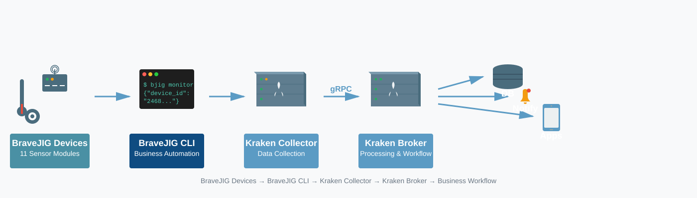
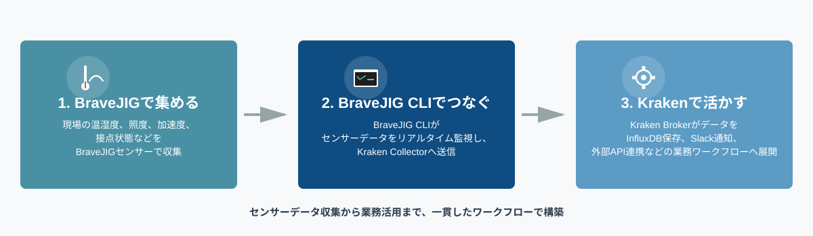

BraveJIG CLI is a paid CLI product for business automation using BraveJIG.
Full support for all 11 BraveJIG sensor modules. Provides all the functions you need for BraveJIG operations, including device control, real-time monitoring, and firmware updates (DFU). Additionally, seamless integration with the Kraken IoT platform developed by BathTimeFish enables you to connect sensor data collected by BraveJIG to your business workflows.
BraveJIG is a product of Braveridge Corporation. Separate purchase required.
BathTimeFish, as a BraveJIG Integration Partner, provides comprehensive support from BraveJIG deployment to operation.

CLI (Command Line Interface) is a method of operating a computer through text input from a keyboard. Unlike the typical mouse-driven GUI (Graphical User Interface), CLI allows for more advanced and flexible control by entering commands (instruction statements).
Script repetitive tasks for efficiency
Control multiple devices simultaneously
Remote control over network
Easy integration with business systems and workflow tools
Enable periodic monitoring and automated execution
BraveJIG CLI is a CLI tool that controls BraveJIG USB Router and all 11 sensor modules. Provides all functions needed for BraveJIG operations: router control, sensor data acquisition, parameter configuration, firmware updates (DFU), and real-time monitoring. Furthermore, integration with the Kraken IoT platform provided by BathTimeFish enables you to build workflows that connect BraveJIG sensor data to preprocessing, storage, notification, and external integration.
Data Flow
BraveJIG CLI strongly supports business automation through flexible control from the command line.
Script routine tasks and reduce human errors. Significantly improve operational efficiency by automating monitoring, control, and data collection.
Control and monitor multiple BraveJIG devices in batch, reducing management costs even in large-scale deployment environments.
Seamlessly integrate with the Kraken IoT platform and existing business systems and workflow tools. Enable data-driven business improvement.
Stable CLI control enables 24/7 unattended operation. Quick response to troubles can also be executed via command.
Start small and scale gradually as your business grows. No wasted investment.
BraveJIG CLI provides full support for all 11 sensor modules offered by BraveJIG, delivering comprehensive functionality from device control to firmware updates.
| Sensor ID | Module Name | Instant Uplink | Get/Set Parameters | DFU | Control Commands |
|---|---|---|---|---|---|
| 0x0121 | Illuminance Sensor | ✅ | ✅ | ✅ | - |
| 0x0122 | Accelerometer | ✅ | ✅ | ✅ | - |
| 0x0123 | Temperature/Humidity | ✅ | ✅ | ✅ | - |
| 0x0124 | Barometric Pressure | ✅ | ✅ | ✅ | - |
| 0x0125 | Distance Sensor | ✅ | ✅ | ✅ | - |
| 0x0126 | Dry Contact Input | ✅ | ✅ | ✅ | ✅ Count Clear |
| 0x0127 | Wet Contact Input | ✅ | ✅ | ✅ | ✅ Count Clear |
| 0x0128 | Contact Output | ✅ | ✅ | ✅ | ✅ Output Control |
| 0x0129 | Thermocouple | ✅ | ✅ | ✅ | - |
| 0x012A | 4-20mA Current | ✅ | ✅ | ✅ | - |
| 0x012B | ADC | ✅ | ✅ | ✅ | - |
BraveJIG CLI seamlessly integrates with the Kraken IoT platform provided by BathTimeFish.
Connect sensor data collected by BraveJIG to Kraken Collector via BraveJIG CLI, then build end-to-end workflows with Kraken Broker for preprocessing, storage, notification, and external integration.

Build consistent workflows from sensor data collection to business utilization
BathTimeFish, as a BraveJIG integration partner, provides consistent support from deployment to operation
Kraken's open-source foundation enables flexible customization and extension
Not limited to cloud - on-premises, closed networks, and edge-complete configurations are also available
Full support for all sensor modules offered by BraveJIG. Illuminance, temperature/humidity, acceleration, contact, and more meet all field needs.
Provides all functions needed for BraveJIG operations: device control, sensor data acquisition, parameter configuration, firmware updates (DFU), and real-time monitoring.
Integration with the Kraken IoT platform provided by BathTimeFish enables end-to-end construction from sensor data collection to business workflows.
Reliable operation enables 24/7 unattended operations. Supports business reliability.
BathTimeFish, as a BraveJIG integration partner, provides consistent support from BraveJIG deployment, BraveJIG CLI provision, Kraken integration, to operational support.
Monitor equipment temperature, humidity, vibration, and contact status in real-time with BraveJIG sensors. Automate anomaly detection with BraveJIG CLI and notification/recording with Kraken.
Efficiently manage and monitor multiple BraveJIG devices. Centralized visibility of all sites from headquarters.
Automate firmware updates and parameter changes to reduce maintenance workload.
Enable 24/7 unattended monitoring. Automatically send notifications through Kraken when anomalies are detected.
Control BraveJIG contact output modules with BraveJIG CLI to automatically operate field equipment (relays, alarms, control panels) based on sensor data.
Connect sensor data collected by BraveJIG to Kraken Collector via BraveJIG CLI, then build workflows with Kraken Broker including preprocessing, InfluxDB storage, Slack notifications, and external API integration.
Focused on BraveJIG device control and monitoring. Ideal for small-scale deployments or sites that don't require integration with existing systems.
Build BraveJIG CLI + Kraken Collector on a single Raspberry Pi or Mini PC. Start with minimal configuration from sensor data collection to business workflows for a single site.
Collect BraveJIG devices from multiple sites with BraveJIG CLI, aggregate and process with Kraken Broker. Build full-scale IoT infrastructure including InfluxDB storage, Slack notifications, and external system integration.
BraveJIG CLI flexibly applies from standalone use to Kraken integration according to deployment scale. Gradual deployment starting small and expanding as needed is also possible.
BraveJIG CLI is a paid CLI product developed and provided by BathTimeFish.
Developed to enable efficient and stable BraveJIG operations. As a paid product, we provide continuous feature additions, bug fixes, and technical support.
BraveJIG is a product of Braveridge Corporation. Separate purchase required.
*For specific pricing, please inquire during deployment consultation.
BathTimeFish, as a BraveJIG integration partner, provides the following comprehensive support.
No. BraveJIG CLI is a paid CLI product provided by BathTimeFish. It is paid to provide continuous support and quality.
Yes. BraveJIG is a product of Braveridge Corporation. BraveJIG hardware must be purchased separately. BathTimeFish provides deployment support as a BraveJIG integration partner.
CLI (Command Line Interface) is a method of operating computers through text input. It is ideal for business automation as scripting and automation are easy. It can be used with basic command operation knowledge.
Full support for all 11 sensor modules offered by BraveJIG. Supports illuminance, accelerometer, temperature/humidity, barometric pressure, distance, dry contact, wet contact, contact output, thermocouple, 4-20mA current, and ADC.
No. BraveJIG CLI can also be used for standalone BraveJIG device control and monitoring. Kraken integration is an option for connecting sensor data to business workflows.
Output sensor data in NDJSON format using BraveJIG CLI's real-time monitoring feature and send to Kraken Collector. Build workflows with Kraken Broker including preprocessing, DB storage, notifications, and external integration. For integration design, please consult BathTimeFish.
Runs on macOS, Linux, and Windows. Stable operation on small PCs and embedded environments.
Yes. As a paid product, we provide continuous support including deployment support, technical support, bug fixes, feature additions, and firmware update support.
BraveJIG CLI is a paid CLI product for business automation using BraveJIG.
During the deployment consultation, we will carefully explain configuration proposals, price estimates, and Kraken integration feasibility according to your specific use case.
BraveJIG is a product of Braveridge Corporation. Separate purchase required.